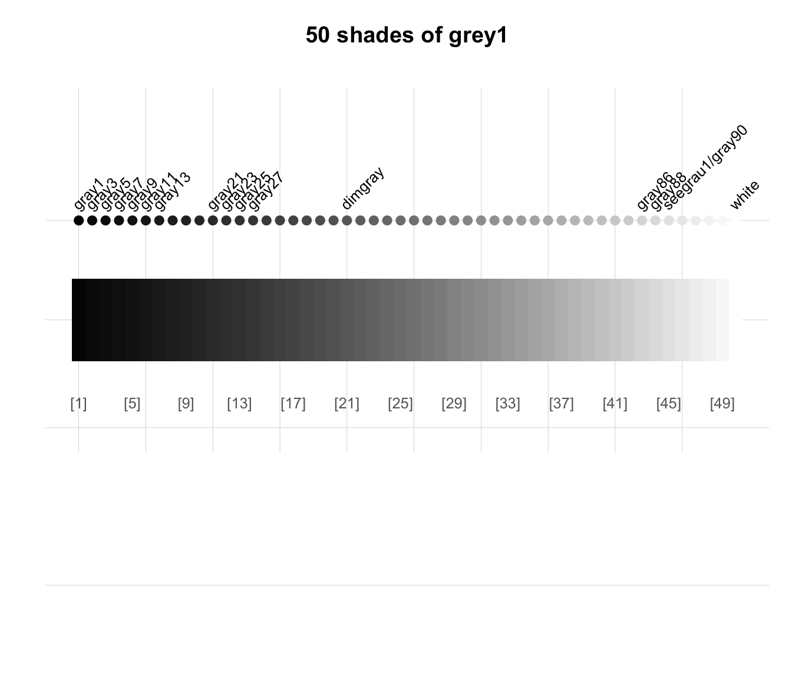

shades_of returns a vector of n colors that are
shades of a color gradient ranging
from an initial color col_1 to a final color col_n.
Arguments
- n
Number of desired colors. Default:
n = 5.- col_1
Initial color. Default:
col_1 = "black".- col_n
Final (n-th) color. Default:
col_n = "white".- alpha
A factor modifying the opacity alpha (as
alpha.finadjustcolor) to a value in[0, 1]. Default:alpha = NA(i.e., no modification of opacity).
Details
By default, the color gradient returned contains n = 5 colors
that range from the initial color col_1 = "black"
to the final color col_n = "white".
Specifying different values for n and the
initial or final colors yields different color ranges.
shades_of is mostly a wrapper for a special usecol command.
However, usecol allows defining more
complex color gradients (e.g., by specifying more than two colors).
See also
seecol for viewing and comparing color palettes;
usecol for using color palettes;
simcol for finding similar colors;
newpal for defining new color palettes;
grepal for finding named colors;
ac for adjusting color transparency.
Other color functions:
ac(),
demopal(),
grepal(),
newpal(),
seecol(),
simcol(),
usecol()
Examples
grey50 <- shades_of(50, col_1 = 'grey1')
seecol(grey50, main = "50 shades of grey1")

blue_black <- shades_of(5, Seeblau, col_n = "black")
seecol(blue_black, main = "5 shades from Seeblau to black")
 wine_white <- shades_of(6, Bordeaux, alpha = 1/2)
seecol(wine_white, col_brd = "black", lwd_brd = .5,
main = "Shades of semi-transparent Bordeaux")
wine_white <- shades_of(6, Bordeaux, alpha = 1/2)
seecol(wine_white, col_brd = "black", lwd_brd = .5,
main = "Shades of semi-transparent Bordeaux")